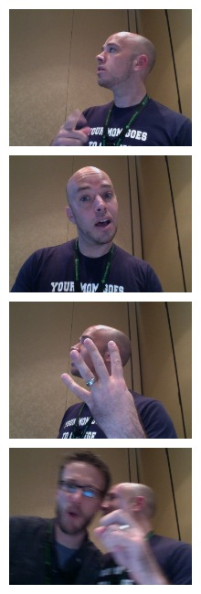

CoffeeScript is for Closers
Special Pantomime Edition
Hi Everyone, I'm Brandon Satrom.

On Thursday, I delivered an HTML5 Workshop here.
Yeah, that workshop.

After eight hours of speaking...
... I lost my voice.
(If you were there on Thursday, you might have noticed)
So, yeah...
No voice === "I has a sad"

The voice has recovered a bit...
But I'm quite certain another solid hour of speaking would do me in.

SOOOOOO.... this is awkward.

I won't be delivering this presentation live today...
The good news is that I did a recording of this session a few months ago...

I'm going to play the video for you in a minute. That's better than nothing, right?
It's 40 minutes long, and we'll do questions after it's over.
I think my voice can handle that.
TL;DR
(TL;DR is just TL;DR for "summary," by the way...)
I'm about to play by a previous recoding on this talk...
If you think that blows, I agree. You should feel free to leave.
My feelings will not be hurt.
Really, I promise.
Oh yeah, one more thing...
When I recorded this video, I worked for this guy...

Last month, I left Microsoft to go work on this...
Just so there's no confusion.
Now, here we go...
Leave now.
Or stay.
Happy St. Patrick's Day